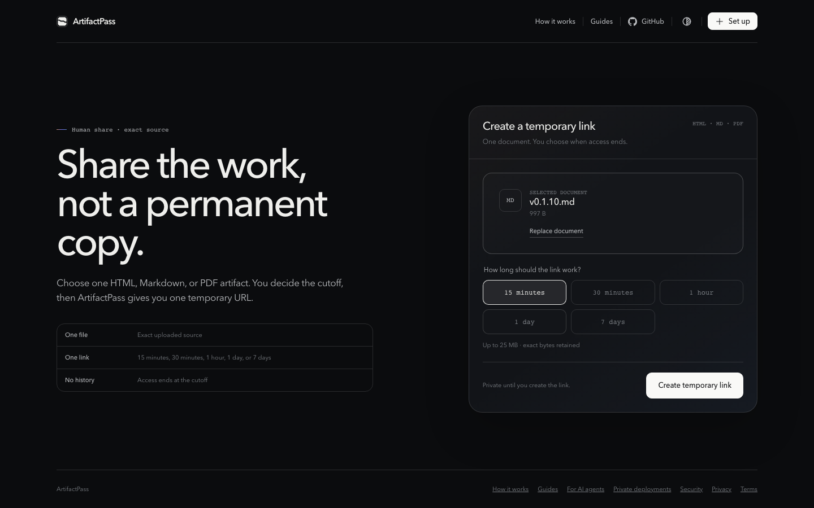
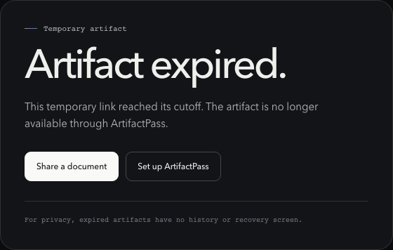

A file needed for one review often ends up behind a URL that keeps working long after the review is over.
Set the cutoff when you publish
ArtifactPass makes the lifetime part of the publishing step and shows the remaining time in the viewer. When the cutoff arrives, the link stops serving the artifact.
Choose the shortest useful lifetime
The public service offers three human-scale choices. Pick based on when the recipient can realistically review the file, not on a vague desire to keep access around just in case.
A private deployment can choose which supported lifetimes appear for its users. The maximum remains 7 days. Administrators can change the offered choices by resuming the deployment and reviewing its configuration.
Publish from the browser or a connected agent
From the browser, choose one supported file, select its lifetime, and create the temporary link. Public ArtifactPass accepts Markdown, HTML, and PDF files up to 25 MB.
From an agent workspace, name the file and lifetime in the request:
Share ./client-review.pdf for 7 days.
The agent publishes from an approved project root and returns the URL. Only the publisher signs in. A recipient can open the live link without an ArtifactPass account.


Treat the URL as the read credential
The share token is carried in the URL. Anyone holding that URL can read and download the artifact until expiry. Do not place live links in public issues, analytics, durable logs, or posts intended for an unrestricted audience.
If the content needs authenticated readers rather than temporary bearer access, use a system with reader accounts and per-recipient permissions.
What happens when the link expires
ArtifactPass evaluates access against the exact expiry time. At the cutoff, the artifact representations become unreachable and non-cacheable through the service.
Cleanup removes the source and derived objects from private R2 storage, then deletes the related metadata from D1. If a cleanup operation fails on its first attempt, the deletion state is recorded and retried. As a fallback, the public R2 lifecycle removes any remaining artifact object after 8 days, which is one day beyond the 7-day maximum link lifetime.

| State | Recipient access | Storage behavior |
|---|---|---|
| Link is live | Anyone with the URL can open and download | Source and required preview data remain in private storage |
| Cutoff reached | Artifact becomes unreachable through the share URL | Cleanup is scheduled and cacheable responses are prevented |
| Cleanup completes | No ArtifactPass access remains | Artifact objects and metadata are removed |
| Recipient downloaded earlier | Their local copy remains | ArtifactPass cannot control an external copy |
Use the right sharing model
Temporary links work best when the access window is known and the artifact is a finished handoff. They are not automatically safer for every situation, and they do not replace judgment about who receives the link.
Use ArtifactPass when
- A reviewer needs the exact file for a limited period.
- An AI agent created a finished artifact that should leave the chat context intact.
- The recipient should open the file without creating an account.
- A prototype or report should not become a permanent public page.
Use another system when
- The document needs permanent storage, search, history, or recovery.
- Readers need individual accounts, revocation, or an audit trail.
- Several people must edit the same document.
- The URL is meant to rank in search or remain a stable public reference.
- The content requires a backend, database, or normal application hosting.
The useful distinction is not private versus public. It is durable access versus a bounded handoff. ArtifactPass deliberately chooses the second.
A quick sharing checklist
- Remove secrets and unnecessary personal information from the file.
- Choose the shortest lifetime that still gives the recipient enough time.
- Send the link through an appropriate channel to the intended people.
- Explain whether the recipient should preview, inspect source, or download.
- Move durable knowledge into the proper repository or documentation system after review.
Common questions
Can I delete a live link early?
The current public workflow centers on the selected expiry. Choose a short lifetime when early access removal is a requirement you cannot otherwise control.
Are ArtifactPass links private?
They are unlisted bearer links, not reader-authenticated private documents. Anyone with the live URL can open the artifact.
Are shared artifacts indexed by search engines?
Artifact viewer routes are excluded from indexing. The link should still be treated as a temporary secret because exclusion from search is not access control.
Can I use ArtifactPass as a backup?
No. Files are intentionally temporary and are removed after expiry. Keep the durable original in the appropriate source system.